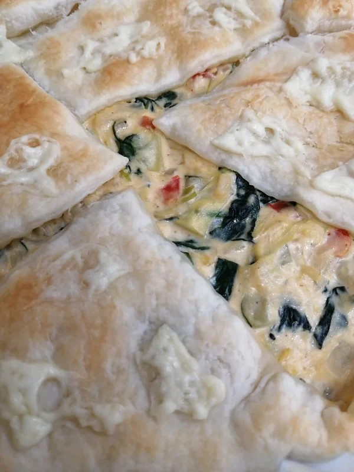

Tarte Folhada de Vegetais
Tempo de preparação
10min
Horas de Cozimento
50min
Tempo Total
1h
Porções
4/5

Ingredientes
- 1 folha de massa folhada
- 1 pacote de natas
- 1 courgette cortada aos bocadinhos
- 1 alho francês cortado em rodelas
- ¼ de uma couve coração
- ½ pimento vermelho cortado aos bocadinhos
- 2 mãos cheias de espinafres
- 1 cebola picada
- 1 dente de alho picado
- sal q.b
- pimenta preta q.b
- pimentão Doce q.b
Instruções
- Pré aqueça o forno a 180ºC.
- Num tacho salteie a cebola num fio de azeite até ficar transparente. Junte o alho e o alho francês e tempere com sal, pimenta preta e pimentão doce.
- Quando o refogado estiver com uma cor dourada, junte a courgette, a couve, o pimento e deixe cozinhar.
- No momento em que os últimos vegetais estiverem praticamente cozidos, adicione os espinafres e deixe cozinhar por mais 2 minutos.
- Junte as natas e deixe a cozinhar fervendo durante mais dois minutos.
- Caso o molho esteja muito líquido, numa tigela coloque uma colher de sopa de farinha maisena com um pouco de água. Dissolva a farinha e junte aos bocadinhos a mistura nas natas até engrossar.
- Desligue o fogão e comece a preparar a travessa de ir ao forno.
- Numa travessa de ir ao forno forrada com o próprio papel vegetal da massa folhada, abra a massa folhada na travessa, coloque o recheio e dobre as pontas da massa.
- Leve ao forno durante 30 minutos ou até a massa ficar dourada na parte de cima.
- Opcionalmente coloque alguns bocadinhos de queijo na parte de cima da massa folhada 10 minutos antes de retirar do forno.
- Sirva ainda quente ou fria, com um arroz branco e uma salada de alface!